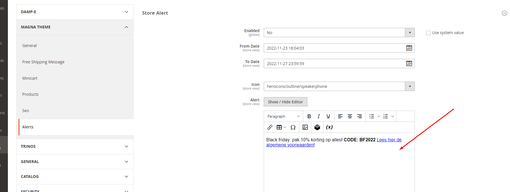
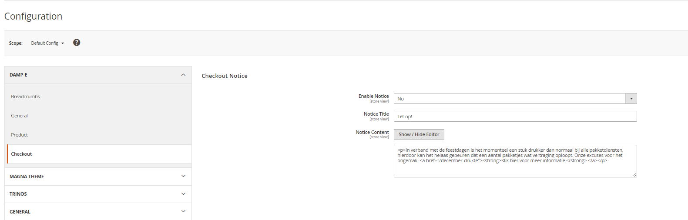
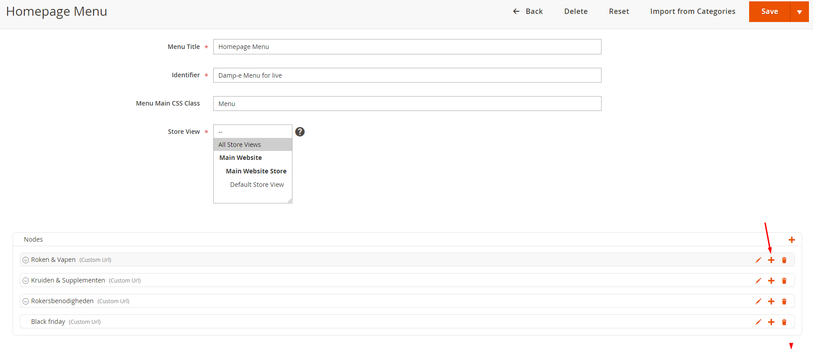
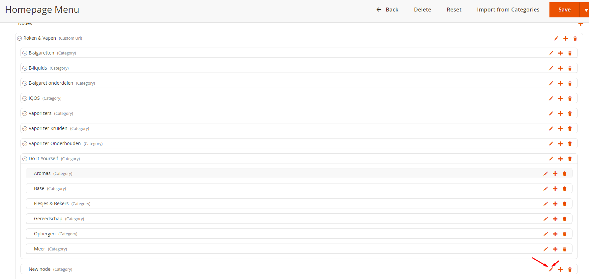

Stores -> Configuration -> Magna-theme -> Alerts -> Store Alert -> Alert
Stores -> Configuration -> Damp-e -> Checkout -> Notice content
Content - > Pages -> Klantenservice -> content -> Dampe – Faq Notice
Homepage menu:
Content -> menus -> homepage menu
Top menu:Content -> menus -> Header Main Menu
1. Head over to the nodes and click on append, to create a new node:
2. Next head over to node you just created and click on edit::
3. Select the category you want to add, and give it a name:
4. Save & then refresh the cache.
Stores -> Attributes -> Product:
1. Select attribute you want as a filter
2. Click on “storefront properties” -> Use in layered navigation -> select filterable(with results)
3. Save the attribute and refresh the cache.
 How to change homepage banners
How to change homepage banners
1. Content -> Pages -> Homepage
2. Double click on the Damp-e Head Banners widget

System -> Tools -> Cache Management:
Select all - > refresh-> Submit
How to invalidate index:
System -> Tools -> Index management:
Select all -> Invalidate index -> Submit